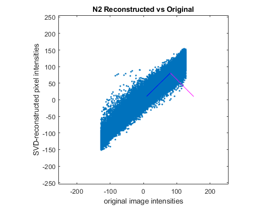

close all
clear all
A = imread('Avengers_Endgame_BW.tif');
nbits = 8;
A = single(A);
A = -(A - (2^nbits-1)/2);
s = svd(A);
[U, S, V] = svd(A);
f0 = figure('Name', 'Semilogy sigmai');
h1 = semilogy(s);
xlabel('nth singular value of A')
ylabel('Singular values')
title('Singular Values corresponding with nth value of A')
grid on
A1 = [];
A2 = [];
A3 = [];
N1 = 0;
N2 = 0;
N3 = 0;
N1a = 70;
N2a = 200;
N3a = 600;
for kk = 1:70
A1 = s(kk) * U(:,kk) * V(:,kk)';
N1 = N1 + A1;
end
for kk = 1:200
A2 = s(kk) * U(:,kk) * V(:,kk)';
N2 = N2 + A2;
end
for kk = 1:600
A3 = s(kk) * U(:,kk) * V(:,kk)';
N3 = N3 + A3;
end
N1g = mat2gray(N1);
N2g = mat2gray(N2);
N3g = mat2gray(N3);
figure
imshow(N1g)
title('N1 sums')
figure
imshow(N2g)
title('N2 sums')
figure
imshow(N3g)
title('N3 sums')
A = A';
x1 = A(:);
B = N1';
B2 = N2';
B3 = N3';
x2 = B(:);
x3 = B2(:);
x4 = B3(:);
x1m = mean(x1);
x2m = mean(x2);
x3m = mean(x3);
x4m = mean(x4);
x1mre = repmat(x1m, length(x1),1);
d1 = x1 - x1mre;
d1norm = d1/norm(d1);
x2mre = repmat(x2m, length(x2),1);
d2 = x2 - x1mre;
d2norm = d2/norm(d2);
x3mre = repmat(x3m, length(x3),1);
d3 = x3 - x1mre;
d3norm = d3/norm(d3);
x4mre = repmat(x4m, length(x4),1);
d4 = x4 - x1mre;
d4norm = d4/norm(d4);
zz = 100;
figure
plot(x1,x2,'.')
title('N1 Reconstructed vs Original');
xlabel('original image intensities');
ylabel('SVD-reconstructed pixel intensities');
hold on
D_n1 = [d1 d2];
S_n1 = 1/(length(D_n1)-1) * D_n1' * D_n1;
[V_n1, l_n1] = eig(S_n1);
ev1 = line([x1m zz*V_n1(1,1)+x1m x2m ], [x2m zz*V_n1(2,1)+x2m x1m ]);
ev1.Color = 'm';
ev2 = line([x1m zz*V_n1(1,2)+x1m x2m ], [x2m zz*V_n1(2,2)+x2m x1m ]);
ev2.Color = 'b';
axis square
axis([-255 255 -255 255])
lamsum_n1 = l_n1(1,1) + l_n1(2,2);
pvar_n1v1 = l_n1(1,1)/lamsum_n1;
pvar_n1v2 = l_n1(2,2)/lamsum_n1;
R_n1 = D_n1'*D_n1;
figure
plot(x1,x3,'.')
title('N2 Reconstructed vs Original');
xlabel('original image intensities');
ylabel('SVD-reconstructed pixel intensities');
D_n2 = [d1 d3];
S_n2 = 1/(length(D_n2)-1) * D_n2' * D_n2;
[V_n2, l_n2] = eig(S_n2);
hold on
ev1 = line([x1m zz*V_n2(1,1)+x1m x3m ], [x3m zz*V_n2(2,1)+x3m x1m]);
ev1.Color = 'm';
ev2 = line([x1m zz*V_n2(1,2)+x1m x3m ], [x3m zz*V_n2(2,2)+x3m x1m ]);
ev2.Color = 'b';
axis square
axis([-255 255 -255 255])
lamsum_n2 = l_n2(1,1) + l_n2(2,2);
pvar_n2v1 = l_n2(1,1)/lamsum_n2;
pvar_n2v2 = l_n2(2,2)/lamsum_n2;
R_n2 = D_n2'*D_n2;
figure
plot(x1,x4,'.')
title('N3 Reconstructed vs Original');
xlabel('original image intensities');
ylabel('SVD-reconstructed pixel intensities');
D_n3 = [d1 d4];
S_n3 = 1/(length(D_n3)-1) * D_n3' * D_n3;
[V_n3, l_n3] = eig(S_n3);
hold on
ev1 = line([x1m zz*V_n3(1,1)+x1m x4m ], [x4m zz*V_n3(2,1)+x4m x1m ]);
ev1.Color = 'm';
ev2 = line([x1m zz*V_n3(1,2)+x1m x4m ], [x4m zz*V_n3(2,2)+x4m x1m ]);
ev2.Color = 'b';
axis square
axis([-255 255 -255 255])
lamsum_n3 = l_n3(1,1) + l_n3(2,2);
pvar_n3v1 = l_n3(1,1)/lamsum_n3;
pvar_n3v2 = l_n3(2,2)/lamsum_n3;
R_n3 = D_n3'*D_n3;
diary vjprob4.txt
echo on
disp('N1 Spectra sums: ');
N1a
disp('N2 Spectra sums: ');
N2a
disp('N3 Spectra sums: ');
N3a
disp('N1 related Covariance etc.')
V_n1
l_n1
S_n1
disp('% variance explained due to the variations along the v1 principal axis: ')
pvar_n1v1
disp('% variance explained due to the variations along the v2 principal axis: ')
pvar_n1v2
disp('Pearson Correlation Coefficient matrix R:')
R_n1
disp('N2 related Covariance etc.')
V_n2
l_n2
S_n2
disp('% variance explained due to the variations along the v1 principal axis: ')
pvar_n2v1
disp('% variance explained due to the variations along the v2 principal axis: ')
pvar_n2v2
disp('Pearson Correlation Coefficient matrix R:')
R_n2
disp('N3 related Covariance etc.')
V_n3
l_n3
S_n3
disp('% variance explained due to the variations along the v1 principal axis: ')
pvar_n3v1
disp('% variance explained due to the variations along the v2 principal axis: ')
pvar_n3v2
disp('Pearson Correlation Coefficient matrix R:')
R_n3
Warning: Image is too big to fit on screen; displaying at 67%
Warning: Image is too big to fit on screen; displaying at 67%
Warning: Image is too big to fit on screen; displaying at 67%
disp('N1 Spectra sums: ');
N1 Spectra sums:
N1a
N1a =
70
disp('N2 Spectra sums: ');
N2 Spectra sums:
N2a
N2a =
200
disp('N3 Spectra sums: ');
N3 Spectra sums:
N3a
N3a =
600
disp('N1 related Covariance etc.')
N1 related Covariance etc.
V_n1
V_n1 =
2×2 single matrix
0.6878 -0.7259
-0.7259 -0.6878
l_n1
l_n1 =
2×2 single matrix
1.0e+03 *
0.1325 0
0 5.1771
S_n1
S_n1 =
2×2 single matrix
1.0e+03 *
2.7909 2.5186
2.5186 2.5186
disp('% variance explained due to the variations along the v1 principal axis: ')
% variance explained due to the variations along the v1 principal axis:
pvar_n1v1
pvar_n1v1 =
single
0.0249
disp('% variance explained due to the variations along the v2 principal axis: ')
% variance explained due to the variations along the v2 principal axis:
pvar_n1v2
pvar_n1v2 =
single
0.9751
disp('Pearson Correlation Coefficient matrix R:')
Pearson Correlation Coefficient matrix R:
R_n1
R_n1 =
2×2 single matrix
1.0e+09 *
2.2310 2.0133
2.0133 2.0133
disp('N2 related Covariance etc.')
N2 related Covariance etc.
V_n2
V_n2 =
2×2 single matrix
0.7030 -0.7112
-0.7112 -0.7030
l_n2
l_n2 =
2×2 single matrix
1.0e+03 *
0.0313 0
0 5.4876
S_n2
S_n2 =
2×2 single matrix
1.0e+03 *
2.7909 2.7280
2.7280 2.7280
disp('% variance explained due to the variations along the v1 principal axis: ')
% variance explained due to the variations along the v1 principal axis:
pvar_n2v1
pvar_n2v1 =
single
0.0057
disp('% variance explained due to the variations along the v2 principal axis: ')
% variance explained due to the variations along the v2 principal axis:
pvar_n2v2
pvar_n2v2 =
single
0.9943
disp('Pearson Correlation Coefficient matrix R:')
Pearson Correlation Coefficient matrix R:
R_n2
R_n2 =
2×2 single matrix
1.0e+09 *
2.2310 2.1807
2.1807 2.1807
disp('N3 related Covariance etc.')
N3 related Covariance etc.
V_n3
V_n3 =
2×2 single matrix
0.7071 -0.7071
-0.7071 -0.7071
l_n3
l_n3 =
2×2 single matrix
1.0e+03 *
0.0003 0
0 5.5811
S_n3
S_n3 =
2×2 single matrix
1.0e+03 *
2.7909 2.7904
2.7904 2.7904
disp('% variance explained due to the variations along the v1 principal axis: ')
% variance explained due to the variations along the v1 principal axis:
pvar_n3v1
pvar_n3v1 =
single
4.6782e-05
disp('% variance explained due to the variations along the v2 principal axis: ')
% variance explained due to the variations along the v2 principal axis:
pvar_n3v2
pvar_n3v2 =
single
1.0000
disp('Pearson Correlation Coefficient matrix R:')
Pearson Correlation Coefficient matrix R:
R_n3
R_n3 =
2×2 single matrix
1.0e+09 *
2.2310 2.2306
2.2306 2.2306
